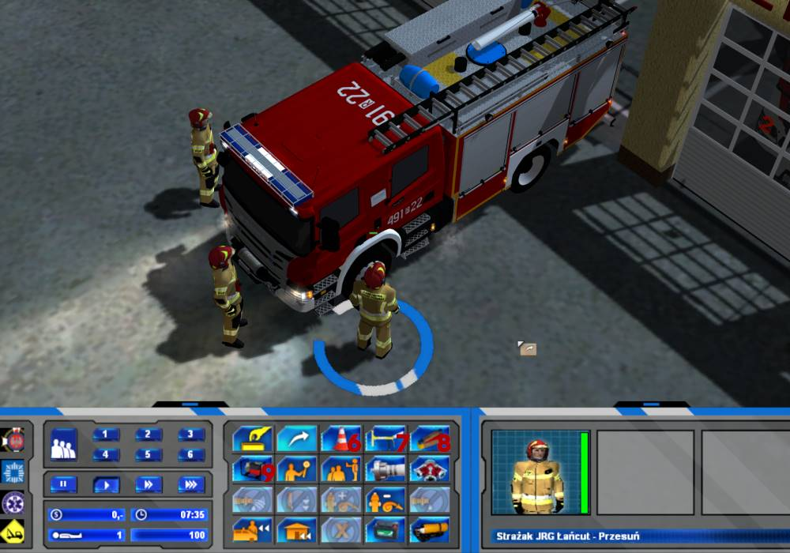
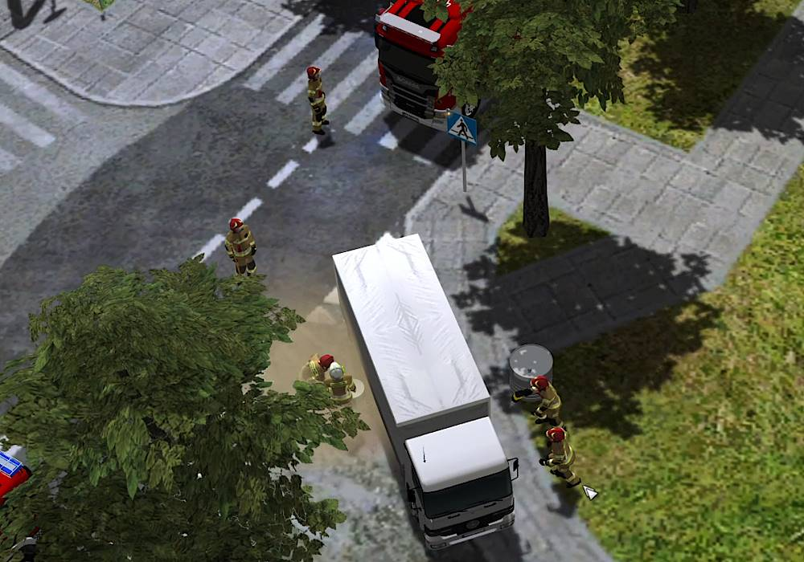

Tutorial
1. General
To install new interface move Interfejs Interface folder content to Data folder.

Recommended game difficulty -
medium.
To alarm firefighters you need to select the dispatcher.

To send vehicles you want, you need to select their icons and click on the bell.
1. Sends firefighters back to their rooms.
2. Opens/closes roof.
3. Turns on/off lights.
Before driving the vehicle, you need to turn on the engine by using command 1. Command 2 is the manual siren. By using command 3 you can equip firefighters with SCBA. Command 4 serves to checking water level and command 5 to set up lightmast.
Shutters in vehicles will come up automatically. To close them you need to select vehicle and click on firefighter.
The same thing is in case of ambulances. To close the door you need to select vehicle and click on paramedic.

To alarm paramedics you need to select ambulance on the map and click on the bell. R01 06 ambulance can be alarmed only between 7AM-11PM.

When you have mission with suicide attempt you need to send ladder vehicle or 491[R]90. Those vehicles have jumppad.
When alarming vehicles from outside the map, you need to click again on the target.
2. Equipment
1. Spineboard. You can use it on victim.
2. Sorbent. It's backfilling the oil stains.
3. Broom. It serves to sweeping backfilled oil stains and branches in falled tree event.
4. Tłumica. It serves to supress grass fires.
5. Medical bag. Firefighters can treat victims with it.

6. Traffic cone. You can equip a firefighter with it and then click on the road. Firefighter will set up a cone. You can pick up cones and put them back to the vehicle.
7. Glas-master. You can cut windows in jammed wrecks with it.
8. Stabilization bricks. You can use it on jammed wreck.
9. Pump. It serves to pump out the water in flooding mission.

1. Hooligan. Replaces axe.
2. Medium foam branch. You can extinguish with foam by using it.
3. SCBA breathing on/off. When you turn it on, you will have air level icon in equipment. You can fill air in 491[R]50 vehicle.
1. Medical bag. You need to equip a paramedic with it to treat victims.
2. Defibrillator. You can use it on a victim. After usage you need to pick it up and put it back to the vehicle.

To put down equipment you need to select firefighter or paramedic and then click on the vehicle. If you want to put down firehose, you need to
hold left shift.

1. Sets up the screen.
2. Warning vest.
3. Fire
To extinguish fire first you need to turn on pump. You need to select firefighter and click on the vehicle but only when vehicle has firehose attached. When firefighter leave pump, it will automatically stop.
When you want to gear up or leave SCBA you need to select firefighter and click on vehicle by holding
left shift. Then you can turn on SCBA breathing. If you want to recharge air you can just leave SCBA and put it on again, send another firefighters or use 491[R]50 vehicle. Firefighter will go and recharge air. Air is reducing by 20%, so you will not see instantly that air is reducing.

Every vehicle has it own water level. You need to make water supply, so it won't fall to 0. You can do it by using hydrant. You need to attach firehose to hydrant and then to vehicle. Next you need to activate hydrant by selecting firefighter and clicking on hydrant. When you want to detach this hose from vehicle, first you must deactivate hydrant by doing the same thing.
You can also do water supply from another vehicle. You need to detach a hose from vehicle with same type of firefighter that attached a hose. If you can't detach a hose try with other type of firefighter.
If you want to extinguish with foam, you need to gear up firefighter with SCBA. Then attach firehose to vehicle and select foam branch from equipment. Now when you will extinguish car or something, foam will come up but only when you tell firefighter to extinguish. If he will do it automaticly, there will be no foam.
You can unhook the battery in extinguished vehicles. Open hood with a hooligan and unhook the battery.
Command 1 is wye, command 2 puts down hose, so you can attach another hose. You can pick up wye or hose only with type of firefighter that installed it. So when you put wye with firefighter with SCBA, you need firefighter with SCBA to pick that up. If you can't pick up wye or detach hose, try with firefighter with different gear type or SCBA.
If you want to attach hose to vehicle, click on cabin. In some vehicles clicking at their backs may not work.
4. Car accidents
If you have car accident, first thing you should do is to unhook the battery. To do that select firefighter and click on wreck. If vehicle has enclosed person in it, you can cut windows. To do that select glas-master from equipment and click on wreck. Also you can use stabilization bricks on wreck.

When you have dead person choose paramedic and click on body. Victim will be covered with black bag. When you do it mission won't be failed. Then you can pick body with caravan.

In case of car collision you can't cut wrecks with jaws. When you have it you need to unhook batteries, clean oil stains and pick wrecks with car carrier.
In case of torn branch you need to install ladder vehicle on the tree, enter the basket with firefighter equipped with chainsaw and cut branch.
In case of hazmat mission you need to call 471[R]64 hazmat vehicle, put a tank on the container and pump substance with drum pump.
1. Hazmat suit.
2. Drum pump.
3. Tank.
In case of car accidents and oil stains you can pump oil from trucks.


 Łańcut Modification
Łańcut Modification